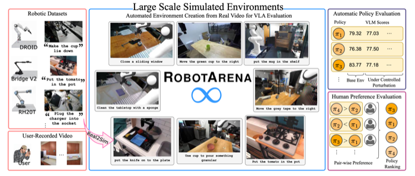

ICLR 2026
RobotArena ∞: Scalable Robot Benchmarking via Real-to-Sim Translation
RobotArena ∞ is a scalable framework for benchmarking generalist robot policies: real-world environments are translated into simulation, making large-scale, reproducible evaluation possible.